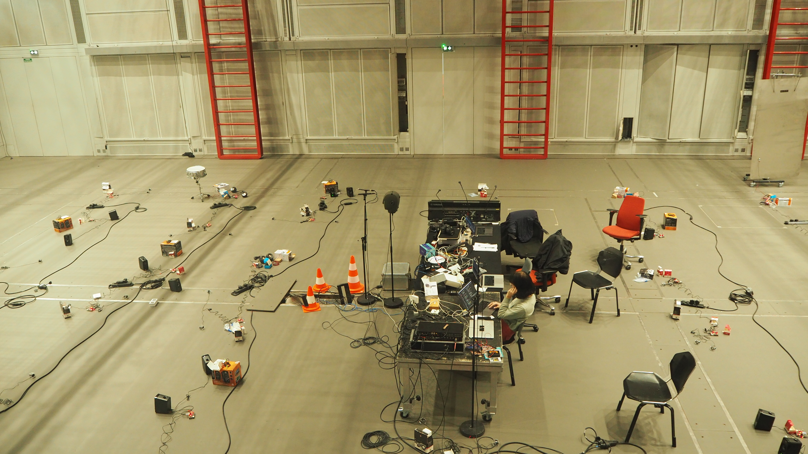
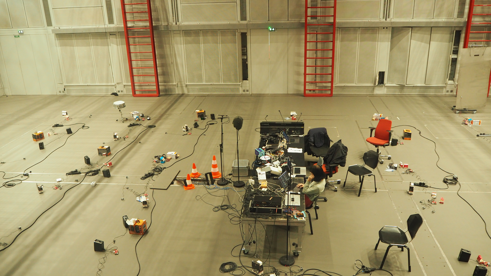

My work focuses on the design and development of distributed interactive music systems and their application in artistic contexts. Such systems can be described as a network of interactive devices (computers, smartphones, nano-computers...) and software exchanging data and producing sound. This creates potential for many collaborative and collective interaction in contexts of musical performances, sound installations, music production, etc...
As artistic creation is a fundamentally open task in which use cases cannot be fully anticipated at design time, my design approach is thoroughly user-centered and oriented towards user-appropration. Moreover, the design of such systems and tools should take into account the following points :
- It should leverage the potential offered by computer networks in terms of communication and exchange of information.
- It should be well-integrated into the existing artistic workflow of their users and should adapt to their idiosyncrasies.
- it should support an heterogeneity of devices (computers, smartphones, nano-computers, musical instruments...)
More generally, my research interests lie in musical interaction design, design at the intersection of arts and technology, human-computer interaction, networked music systems, web audio technologies, new interfaces for musical expression.
publications
Aliénor Golvet, Benjamin Matuszeswski, Frédéric Bevilacqua. Designing a distributed musical instrument for collective improvised interaction. AudioMostly, 2024, Milan, Italy.
Benjamin Matuszewski, Aliénor Golvet. Rapid Prototyping of Distributed Musical Things using Web Technologies. 4th International Symposium on the Internet of Sounds, 2023, Pisa, Italy.
Aliénor Golvet, Benjamin Matuszewski, Frédéric Bevilacqua. Simone : un instrument distribué pour l’étude des interactions improvisées collectives. Journées d'Informatique Musicale, 2023, Saint-Denis, France.
prix AFIM Jeune Chercheuse / Jeune Chercheur 2023Aliénor Golvet, Luciano L Barbosa, Etienne Démoulin, Benjamin Matuszewski. Koryphaîos: A Patchworked Compositional Environment for Distributed Music Systems. Web Audio Conference, 2022, Cannes, France.
Emanuelle Majeau-Bettez, Aliénor Golvet, Clément Canonne. Tracking auditory attention in group performances: A case study on Éliane Radigue’s Occam Delta XV. Musicae Scientiae, 2023.
Aliénor Golvet, Louise Goupil, Pierre Saint-Germier, Benjamin Matuszewski, Gérard Assayag, Jérôme Nika, Clément Canonne. With, against, or without? Familiarity and co-presence increase interactional dissensus and relational plasticity in freely improvising duos. Psychology of Aesthetics, Creativity, and the Arts, 2021.
other
Member of the organising committee of the JJCAAS 2023 (Journées Jeunes Chercheur·se·s en Audition, Acoustique musicale et Signal audio)
 

available works

Koryphaîos 
an environment for composition of distributed music performance on a local network of device. It connects
the bach library for Max/MSP and the
soundworks framework for developping distributed multimedia
application.
Koryphaîos works by sending your composition in Max/MSP to a server which then dispatches the various notes
among a
local network of devices (e.g. computers, mobile phones, ...). These devices then synthesize the requested sound
in the
browser using the WebAudio API.

Simone
a set of web interfaces for collective (local-)networked improvisation based on 2 concepts : using the microphone in the sound synthesis process, using the network to share information between users.
Simone v2
a solo instrument for improvising with a network of distributed devices (mainly raspberry pi computers) using a web interface. Based on earlier works with the Simone project.